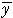
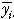
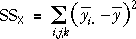
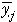
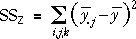

Formulae for sums of squares in orthogonal designs
For orthogonal designs, the explained sums of squares for the two factors have relatively simple formulae that help to explain their interpretation.
We again use the notation yijk to denote the k'th of the replicates for which factor X is at level i and factor Z is at level j. If the overall mean response is denoted by  and the mean response when X is at level i is  then the sum of squares explained by X is

where the summation is over all experimental units. This sum of squares therefore measures the differences between the mean response at different levels of X.
In a similar way, if the mean response when Z is at level j is , then the sum of squares explained by Z is

and it describes summarises how much the mean response varies between the different levels of Z.